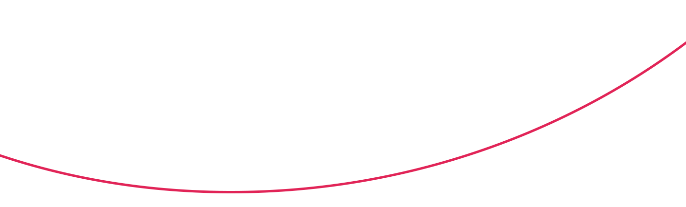

	<!DOCTYPE html>
	<html lang="ru">
	<head>
		<meta charset="UTF-8">
		<meta name="viewport" content="width=device-width, initial-scale=1">
		<title></title>
		<link rel="stylesheet"  href="../node_modules/bootstrap/dist/css/bootstrap.min.css">
		<link rel="stylesheet"  href="../node_modules/bootstrap/dist/css/bootstrap-reboot.css">
		<link rel="stylesheet"  href="../node_modules/waypoints/src/waypoint.js">
		<link rel="stylesheet" href="css/main.css">
		<script src="../node_modules/jquery/dist/jquery.min.js"></script>
		<script>
			$(document).ready(function(){
				$('.counter').counterUp({
					delay: 50,
					time: 500
				});
			});
		</script>
	</head>
	<body>
		<header>
			<div class="container">
				<div class="row justify-content-center">
					<div class="col-lg-12">
						<nav class="d-flex justify-content-between w-100">
							<a class="navbar-brand d-flex" href="#">
								
								<div class="logo-text">
									<p>pantheon</p>
									<span>project</span>
								</div><!-- /.logo-text -->
							</a>
							<a href="#" class="menu d-block d-flex align-items-center">
								<p>меню</p>
								<span class="menu-burger"></span>
							</a>
						</nav>
					</div><!-- /.col-lg-12 -->
				</div><!-- /.row -->
				<div class="row justify-content-center position-relative">
					<div class="col-lg-7 header-center-text">
						<p>Пункт назначения:</p><span>Пантеон,</span>
						<h1>марс</h1>
						<div class="header-video position-relative">
							
							<a href="#" class="play">
								
								
								<div class="play-title position-absolute">
									Смотреть видео
								</div><!-- /.play-title -->
							</a><!-- /.play -->
						</div><!-- /.header-video -->
						<div class="panteon-bg">
							<span>п</span>
							<span>а</span>
							<span>н</span>
							<span>т</span>
							<span>е</span>
							<span>о</span>
							<span>н</span>
						</div>
						<div class="olimp-bg">
							<span>о</span>
							<span>л</span>
							<span>и</span>
							<span>м</span>
							<span>п</span>
						</div><!-- /.panteon-bg -->
					</div><!-- /.col-lg-7 -->
				</div><!-- /.row -->
				<div class="button-down">
					<span></span>
				</div><!-- /.button-down -->
			</div><!-- /.container -->
		</header>
		<section class="numbers">
			<div class="container">
				<div class="row">
					<div class="col-lg-2">
						<div class="number">
							<p><span class="counter">4</span></p>
							<p>седьмая по размерам  планета Солнечной  системы</p>
						</div><!-- /.number -->
					</div><!-- /.col-lg-2 -->
					<div class="col-lg-2">
						<div class="number">
							<p><span class="counter">7</span></p>
							<p>седьмая по размерам планета Солнечной системы</p>
						</div><!-- /.number -->
					</div><!-- /.col-lg-2 -->
					<div class="col-lg-2">
						<div class="number">
							<p><span class="counter">10,7</span>%</p>
							<p>массы Земли 
								(ваш вес будет в 3 раза
							меньше, чем на Земле)</p>
						</div><!-- /.number -->
					</div><!-- /.col-lg-2 -->
					<div class="col-lg-2">
						<div class="number">
							<p><span class="counter">2</span></p>
							<p>спутника вместо 
								Луны (как картошка, 
							только больше)</p>
						</div><!-- /.number -->
					</div><!-- /.col-lg-2 -->
					<div class="col-lg-2">
						<div class="number">
							<p><span class="counter">21</span></p>
							<p>высота самой высокой 
							горы Марса.</p>
						</div><!-- /.number -->
					</div><!-- /.col-lg-2 -->
					<div class="col-lg-2">
						<div class="number">
							<p>+<span class="counter">20</span></p>
							<p>максимальная 
								температура 
							на поверхности </p>
						</div><!-- /.number -->
					</div><!-- /.col-lg-2 -->
				</div><!-- /.row -->
			</div><!-- /.container -->
		</section>
		<div class="container">
			<section class="mars-subs position-relative">
				<h1>Марс. Вспомнить всё</h1>
				<div class="row">
					<div class="col-lg-6">
						<h3>Что такое Марс?</h3>
						<p class="mb-2">	Планета Солнечной системы, названа в честь Марса — древнеримского бога войны. Иногда Марс называют «красной планетой» из-за красного оттенка поверхности, придаваемого ей оксидом железа. 
							<br>
							<p> Особенности планеты — наличие слабой отмосферы, состоящей в основном из улекислого газа, времена года, пылевые бури, сильная эррозия почв.</p> 
						</p>
					</div><!-- /.col-lg-6 -->
					<div class="col-lg-4">
						<h3>Где это? Как туда доехать?</h3>
						<p>Расстояние до Марса — почти 56 миллионов километров. Чтобы преодалеть такое расстояние, нужно лететь 
						на межпланетоном корабле 7-8 месяцев.</p>
					</div><!-- /.col-lg-4 -->
				</div><!-- /.row -->
				<div class="horizontal-hr">
					
					<div class="earth">
						<p>Earth</p>
					</div><!-- /.earth -->
					<div class="mars">
						<p>Mars</p>
					</div><!-- /.mars -->
					<div class="korabl">
						
						<p>56 <sup>mln km</sup><span>7 <sup>mths</sup></span></p>
					</div><!-- /.korabl -->
				</div><!-- /.horizontal-hr -->
			</section>
		</div><!-- /.container -->
		<div class="container">
			<section class="info-ilon">
				<h1 class="mb-4">От идеи до реализации</h1>
				<h3 class="mb-4">Илон Маск. Гений или безумец?</h3>
				<div class="row justify-content-between">
					<div class="col-lg-7">
						<p class="mb-4">
							Канадско-американский инженер, предприниматель, изобретатель и инвестор; миллиардер. Основатель компаний SpaceX и X.com, позже переименованной в PayPal. Планирует потратить большую часть накоплений на реализацию своей мечты, а также мечты многих тысяч романтиков, писателей, учёных: создать внеземную цивилизацию.
						</p>
						<p class="mb-4">
							Мы должны сделать эту мечту реальностью за наше время жизни. Любой человек, 
							который пожелает отправиться на Марс, должен иметь такую возможность
						</p>
						<p class="mb-2">
							— заявил Маск на Международной астронавтической конференции в Гвадалахаре (Мексика). Он обосновал необходимость своего проекта вопросом выживания человечества, которое для своего сохранения должно стать «космическим видом».
						</p>
						<p>
							Илон поставил перед собой цель: скоратить стоимость вывода кораблей в космос в 10 раз, что станет первым шагом для человечества в освоении Марса.
						</p>
					</div><!-- /.col-lg-8 -->
					<div class="col-lg-4">
						<div class="foto-ilonMask position-relative">
								
						</div><!-- /.foto-ilonMask -->	
					</div><!-- /.col-lg-4 -->
				</div><!-- /.row -->
			</section>
			<div class="fly">
				<div class="row">
					<div class="col-lg-12">
						<div class="row no-gutters justify-content-around">
							<div class="col-lg-4">
								<div class="raketa-img">
									
								</div><!-- /.raketa-img -->
							</div><!-- /.col-lg-4 -->
							<div class="col-lg-7 pad-60">
								<h4 class="mb-4">Стоимость перелёта</h4>
								<p class="mb-3 text-price">
									Высадка двоих астронавтов на Луну обошлась США в 20 млрд. долларов. 
									Маск стремится сократить эту цифру в 20 000 раз, что составит 500 000 долларов на человека.
								</p>
								<div class="row price-flight">
									<p>$500 k</p>
									<p>
										и ты на Марсе!
									</p>
									<button>Я готов лететь</button>
								</div><!-- /.price-flight -->
							</div><!-- /.col-lg-12 -->
						</div><!-- /.row -->
					</div><!-- /.col-lg-12 -->
				</div><!-- /.row -->
			</div><!-- /.fly -->
		</div><!-- /.container -->
		<section class="stars">
			<h1 class="text-center">Подводные камни в масштабах космоса</h1>
			<div class="container">
				<div class="row">
					<div class="col-lg-12 stars-video">
						
						<a href="#" class="play stars-play">
							
							
						</a><!-- /.play -->
					</div><!-- /.col-lg-12 -->
				</div><!-- /.row -->
				<div class="row stars-info">
					<div class="col-lg-3">
						<p class="mb-5">
							Жить или выживать? <span class="sybvols">	<span class="sybvol"></span><span class="sybvol"></span><span class="sybvol"></span></span>
						</p>
						<p class="mb-4 next_sybvol">
							Готовы ли технологии?	
						</p>
						<p class="next_sybvol mb-4">
							Путешествие на грани <br>	
							фантастики	
						</p>
						<p class="next_sybvol mb-4">
							Жизнь на Марсе	
						</p>
					</div><!-- /.col-lg-4 -->
					<div class="col-lg-9 stars-info-text">
						<h3>Жить или выживать?</h3>
						<p class="mb-3">Чем отличаются Земля и Марс? Какие условия встретят новых поселенцев?</p><!-- /.mb-3 -->
						<p class="mb-3">Марс холодная и засушливая планета, на которой есть своя атмосфера, на 96% состоящая из углекислых газов, а минимальная температура опускается до -140 градусов по Цельсию. Каждый год по весне на планете случаются пылевые бури, длящиеся от нескольких часов до нескольких месяцев. </p><!-- /.mb-3 -->
						<p class="mb-3">На планете отсутствует магнитное поле, поэтому радиационный фон повышен. А низкая гравитация при длитеьном пребывании на Марсе сделает возвращение на Землю невозможным. Полёт на Марс — билет в один конец с целью создать новую цивилизацию.</p><!-- /.mb-3 -->
					</div><!-- /.col-lg-8 -->
				</div><!-- /.row -->
			</div><!-- /.container -->
		</section>
		<div class="container">	
			<section class="organization">
				<h1>Организация жизни в колонии</h1>
				<div class="row">
					<div class="col-lg-2">
						<div class="line">
							<div class="line-icon text-icon">
								
							</div><!-- /.line-icon -->
							<div class="line-icon">
								
							</div><!-- /.line-icon -->
							<div class="line-icon">
								
							</div><!-- /.line-icon -->
							<div class="line-icon">
								
							</div><!-- /.line-icon -->
							<div class="line-icon">
								
							</div><!-- /.line-icon -->
						</div><!-- /.line -->
					</div><!-- /.col-lg-2 -->
					<div class="col-lg-9">
						<div class="vnutr-raketa">
							
						</div><!-- /.vnutr-raketa -->
						<h4 class="mb-2">Проживание</h4>
						<p class="mb-4">В основе жилых помещений лежат надувные компоненты — спальня, рабочая зона, гостиная, парник для выращивания зелени — 50 м2 на человека. Благодаря этим компонентам, колонисты смогут принять душ, приготовить свежую пищу, носить обычную одежду. Весь комплекс соединен сетью ходов.</p>
						<button>Подробнее</button>
					</div><!-- /.col-lg-9 -->
				</div><!-- /.row -->
			</section>
		</div><!-- /.container -->
		<footer>
			<div class="container">
			</div><!-- /.container -->
		</footer>

		<script src="../node_modules/jquery/dist/jquery.js"></script>
		<script src="../node_modules/waypoints/lib/jquery.waypoints.min.js"></script>
		<script src="../node_modules/jquery.counterup/jquery.counterup.min.js"></script>
		<script src="../node_modules/bootstrap/dist/js/bootstrap.bundle.js"></script>

	</body>
	</html>